Mechanical Integration of LV Electronics
During my first year in the EPFL Racing Team as a chassis member, I was responsible for the full mechanical integration of the low-voltage electronics inside the carbon monocoque. This project was a major learning experience, combining CAD design, prototyping, waterproofing strategy, material selection, fastening design, and close collaboration with the electrical team.
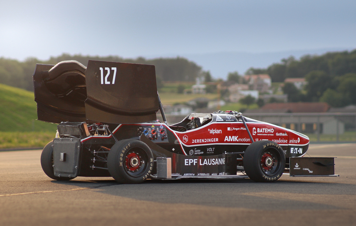
Project Overview
In my first year with the EPFL Racing Team, I joined the chassis department and worked on one of the most cross-functional topics of the car: the mechanical integration of the low-voltage electronics.
The scope included the design and development of several electrical enclosures, their positioning inside the monocoque, the integration of LEMO interfaces, and the preparation of solutions compatible with production, assembly and race conditions.
My Role
- Full mechanical integration of the LV electronics inside the car
- Development of enclosure concepts, interfaces and fastening strategies
- Close work with the electrical team to understand system needs and connector constraints
- Participation in the carbon monocoque production with the chassis team
- Contribution to a new waterproofing approach for competition readiness
Context
The EPFL Racing Team develops a new Formula Student race car every year. In this context, integrating the electronics is not only a packaging task: it is a structural, safety and manufacturing challenge.
Each enclosure had to fit within the limited volume of the monocoque, remain accessible for assembly and maintenance, protect the electronics, and interface correctly with the rest of the car architecture.
Engineering Challenge
One of the most interesting parts of the project was the search for waterproofness, which was a key topic for competition reliability and a relatively new challenge for the team.
The work therefore required balancing sealing performance, electrical isolation, compactness, manufacturability, connector integration and robust fixation in a very constrained environment.
What I Learned
- A much deeper understanding of the electronics system in order to design meaningful mechanical solutions
- How connector geometry and routing strongly influence enclosure design
- How waterproofing depends on details such as groove geometry, compression, screws and interfaces
- How to move from concept ideas to CAD models, prototypes and manufacturable parts
- How to work across chassis, electronics and composites topics in a race car project
Materials & Manufacturing
This project was also extremely formative from a materials perspective. Depending on the box function and constraints, several manufacturing routes and materials were explored.
I learned a lot about the use of 3D printing, carbon fiber, fiberglass and aluminum, and about how the material choice directly affects stiffness, insulation, sealing, weight, manufacturability and assembly strategy.
Main Technical Work
- Design of multiple LV electrical enclosures for different subsystems
- Integration of LEMO connectors and related geometric constraints
- Research and testing of sealing solutions for rain resistance
- Definition of fixing and attachment concepts for safe installation in the monocoque
- Preparation of designs for prototyping and production
Fixation & Assembly
A very important part of the work was not only the box itself, but also the way it was attached to the car. This included direct fixations, support pieces, inserts, screws, assembly logic and accessibility during mounting and servicing.
These fastening details were critical, because a good enclosure design is not enough if the installation is fragile, difficult to assemble, or incompatible with the surrounding structure.
Monocoque Production
In parallel with the electronics integration work, I also took part in the production of the carbon monocoque with the chassis team.
This was especially valuable because it gave me a much better understanding of the structure in which the electronics had to be integrated, and of the manufacturing realities behind a Formula Student composite chassis.
Why This Year Was Important
This first year was extremely formative. It taught me how to handle a real engineering topic with strong interactions between design, manufacturing, constraints, iteration and team collaboration.
It also gave me my first deep exposure to race car integration work, where performance depends on many small technical decisions that all need to work together reliably.
Image Gallery
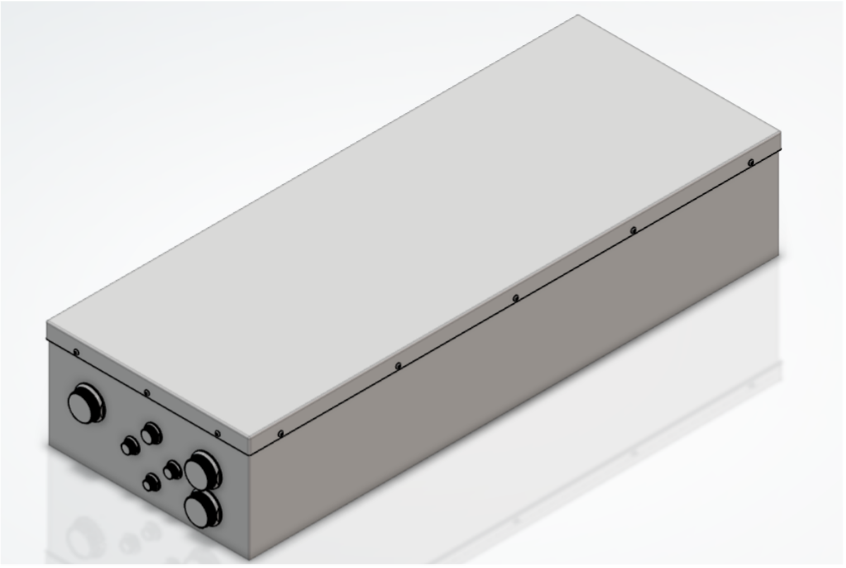
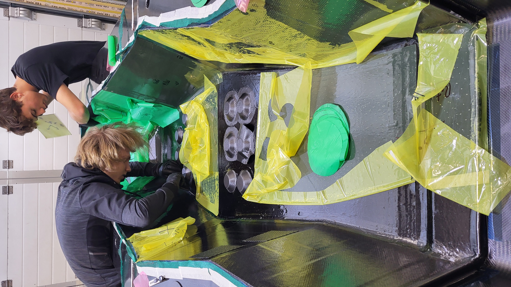
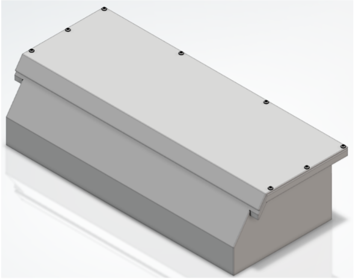
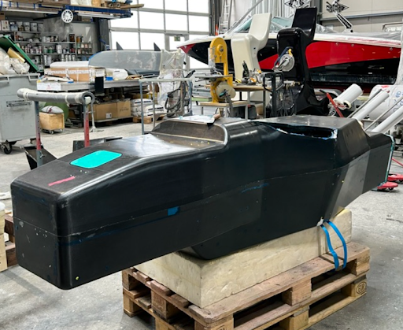
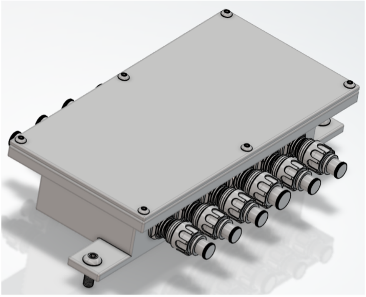
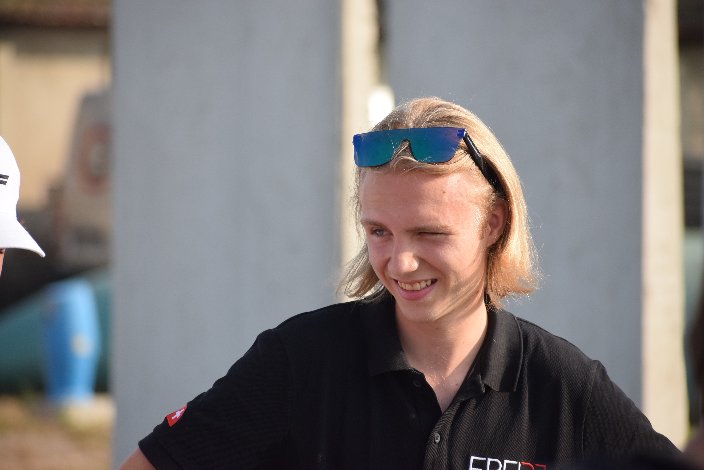
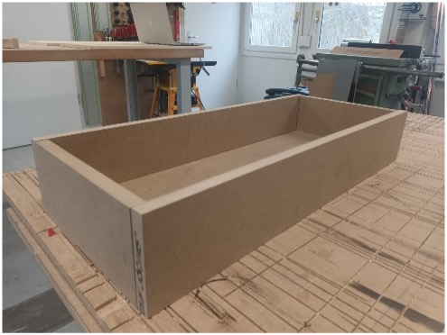
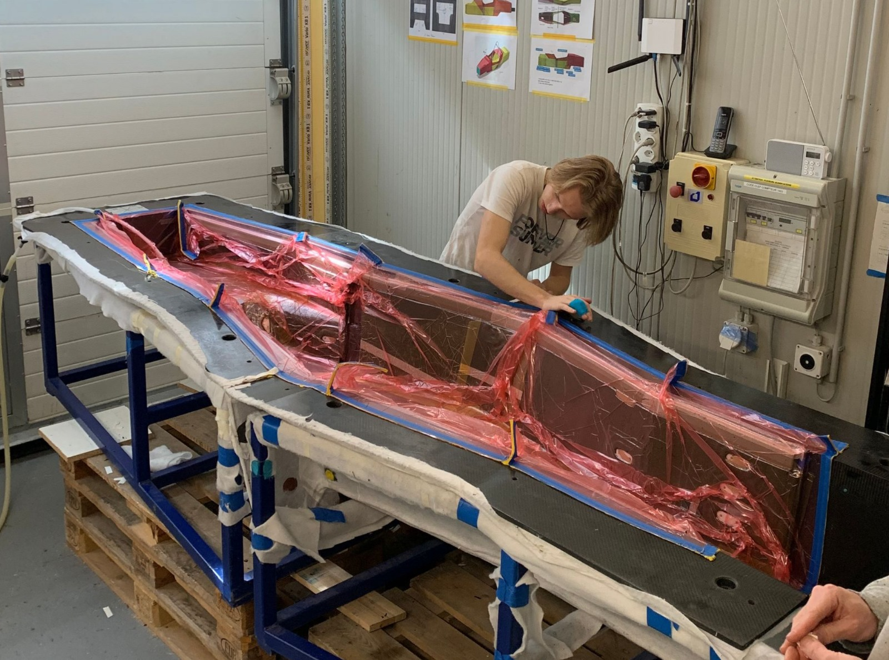
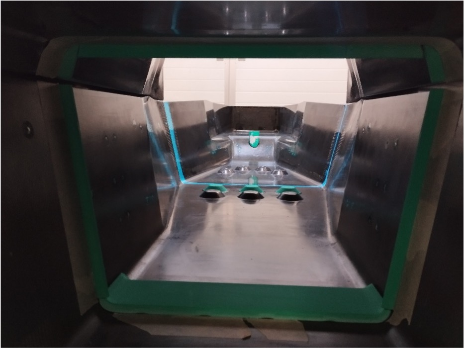
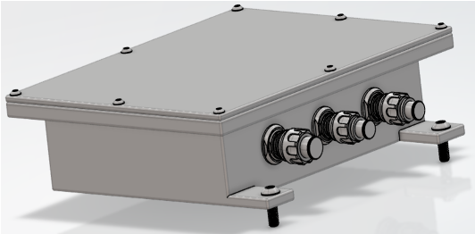
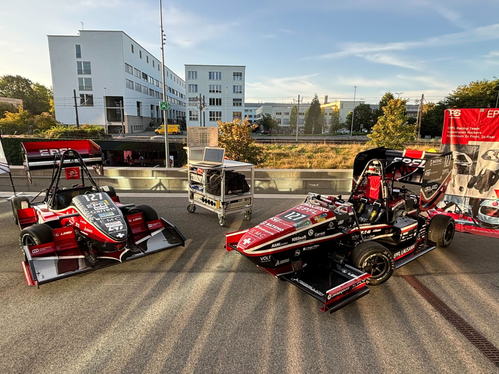
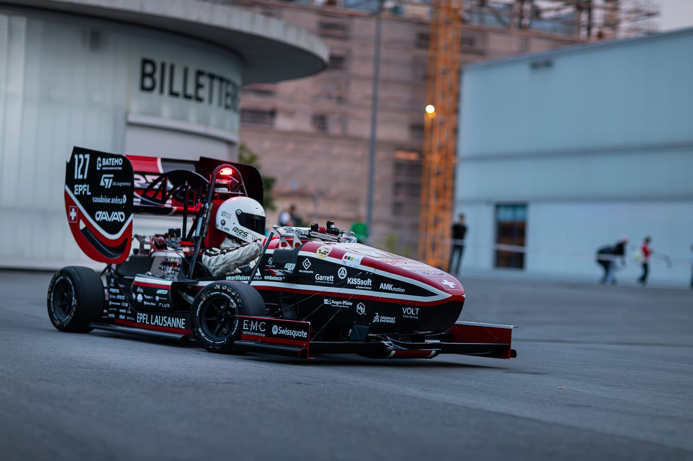